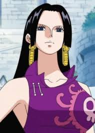
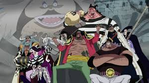

Oda explained how he draws females!
Reader: Nice to meet you. This is sudden, but... please teach us a tip or two on how to draw that hawt hourglass body all ONE PIECE female characters seem to have! Make sure you don't forget to include them airbags ♡
P.N. If there's no bread, let them eat roses~
Oda: Yes. Hello. It's drawing time at the SBS segment. I would suggest that you think of a woman's proportions as "three circles, one X". Now if you'll excuse me, I'll be leaving.

Blackbeard’s Third and Final Devil Fruit!
As we all know, Blackbeard after the Marineford battle obtained the most powerful Paramecia type Gura Gura No Mi capable of destroying everything, with his own another devil fruit power Yami Yami No Mi that has the power to nullify any effect of Devil Fruits, and has the power to maintain large gravity inside his logia.
If we go by all the theories according to which Blackbeard will get a third Devil Fruit, which should be a Zoan type fruit. Most people agree that the most powerful Zoan type fruit at this moment is Kaido’s Dragon type fruit.